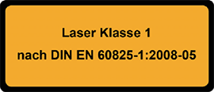
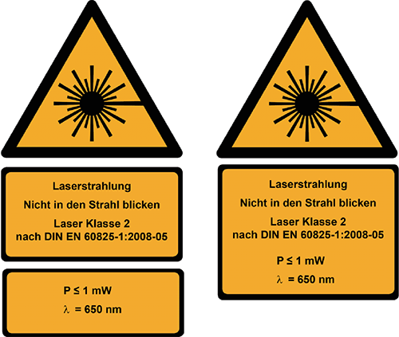
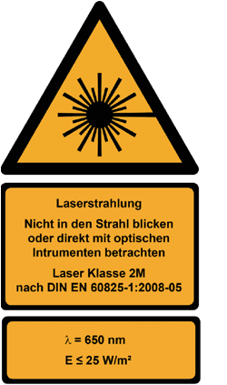
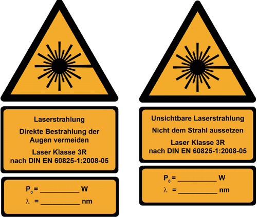
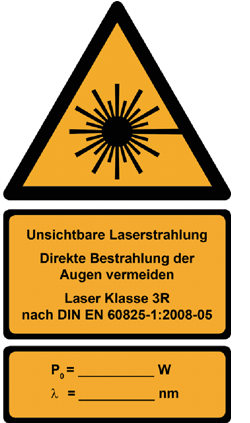
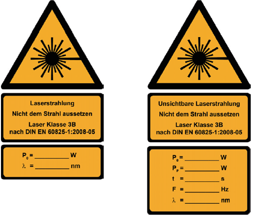
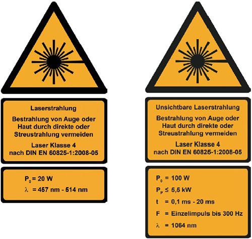

(1) Laser-Einrichtungen der Klassen 2 bis 4 müssen nach Abschnitt 5 der Norm DIN EN 60825-1:2008-05 [1] auf einem Hinweisschild durch Angaben über die maximalen Ausgangswerte der Laserstrahlung, der Impulsdauer (falls zutreffend) und der ausgesandten Wellenlänge(n) beschrieben werden. Diese Angaben können auf einem Hinweisschild zusammen mit der Angabe der Klasse oder auf einem separaten Hinweisschild aufgenommen werden. Die Bezeichnung und das Datum der Veröffentlichung der Norm, nach der das Produkt klassifiziert wurde, müssen auf dem Hinweisschild oder in der Nähe am Produkt angebracht werden. In den folgenden Beispielen wird die allgemeine Form DIN EN 60825-1:2008-05 [1] verwendet.
(2) Laser-Einrichtungen der Klassen 2 bis 4 sind zusätzlich mit einem dreieckigen Warnschild mit Gefahrensymbol zu kennzeichnen.
(3) Form, Farbe und Gestaltung des Warn- und Hinweisschildes - siehe Bilder 1 und 2 der DIN EN 60825-1:2008-05 [1].
Hinweis:
In der Lichtwellenleitertechnik nach DIN EN 60825-2 [2] werden die gleichen Hinweisschilder zur Kennzeichnung der Gefährdungsgrade an lösbaren Steckverbindern verwendet. Anstelle des Wortes "Laserklasse" wird hier der Begriff "Gefährdungsgrad" verwendet.
(4) Die Symbole bei den technischen Zusatzangaben sind wie folgt definiert:
| E | Bestrahlungsstärke (Einheit: W · m-2) |
| F | Impulswiederholfrequenz (Einheit: Hz) |
| P0 | Gesamt-Strahlungsleistung, ausgestrahlt von einem Dauerstrichlaser, oder mittlere Strahlungsleistung eines wiederholt gepulsten Lasers (Einheit: W) |
| PP | Strahlungsleistung, ausgestrahlt innerhalb eines Impulses eines gepulsten Lasers (Einheit: W) |
| t | Dauer eines Einzelimpulses (Einheit: s) |
| λ | Wellenlänge der Laserstrahlung (Einheit: nm) |

Hinweis:
Der Hersteller kann bei Lasern der Klasse 1 und 1M auf die Kennzeichnung auf den Laser-Einrichtungen verzichten und diese Aussagen nur in die Benutzerinformation aufnehmen. Die Laser sind dann nicht gekennzeichnet.

| a) | oder | b) |

| a) | Wellenlängenbereich von 400 nm bis 700 nm |
| b) | Wellenlängen < 400 nm: auf dem Hinweisschild wird "Laserstrahlung" durch "Unsichtbare Laserstrahlung" ersetzt |

| a) | b) |
c) Wellenlängen 700 nm bis 1 400 m: auf dem Hinweisschild wird "Laserstrahlung" durch "Unsichtbare Laserstrahlung" ersetzt

| c) |

| a) sichtbareLaserstrahlung (z.B.Dauerstrichlaser) |
b) unsichtbare Laserstrahlung (z.B.Impulslaser) |

| a) sichtbareLaserstrahlung (z.B.Dauerstrichlaser) |
b) unsichtbare Laserstrahlung (z.B.Impulslaser) |